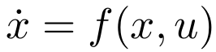

and U is a subset of IR. The dimension of the control vector is limited to 1. The state variables are denoted x1 and x2.
and U is a subset of IR. The dimension of the control vector is limited to 1. The state variables are denoted x1 and x2.Viabibex is a software designed to approximate viability kernel of 2D problems. Methods and tools implemented in this software are based on interval analysis. Interval analysis allows to approximate the viability kernel with continuous set in a guaranteed way. Viabibex uses the C++ Interval library Ibex and its extension Dynibex that provides guaranteed integration tools.
Algorithms implemented in Viabibex were presented at SMART 2015 workshop. The presentation is available here: SMART_2015 presentation .
At the moment, only the binary for linux 64 bits is available:
Viabibex interface has many buttons and fields that can be grouped by functionality.
It is also possible to save/load problems under "file" menu, and save current graphic view under "options" menu on the top left corner. Sevral problems are already provided.
Viabibex can approximate the viability kernel of 2D dynamic and controllable systems:

, where
and U is a subset of IR. The dimension of the control vector is limited to 1. The state variables are denoted x1 and x2.
In order to set a problem, you must proceed as follow:
It is also possible to give an initial set that will consider as a subset of Viab(K). To do so, you must procced the same way as outer constraints are defined. For example, if you want to defined a circle centred on (1,-1) with a radius of 1 as a viable subset of Viab(K), you must write the expression "(x1-1)^2+(x2+1)^2-1" in the field.
By clicking on the "Apply Constraints" button, you apply the constraints to the subset [x1min,x1max]x[x2min,x2max] of the state space.
Be carefull, clicking "Apply Constraints" button erase all results already found.
Once the problem is set, it is possible to display the vector field. To do so, you must first check the "Show vector field" checkbox.

Then, you can move the cursor of the slidebar next to the "Show vector field" checkbox to display the vector field for a given control between umin and umax. In this example, the double integrator example is considered.
The "V-viable functions" button launches an algorithm that compute subsets of Viab(K). The principle of the algorithm is to fix a control uf, and to find equilibrium points of the autonomous system f(x,uf). Then using Lyapunov theory the algorithm tries to compute subset of Viab(K). For further detail about this algorithm, see SMART 2015 presentatoin .
You can run the algorithm with default parameters by clicking on the "V-viable functions" button. It is possible to modify some parameters of the algorithm. To do so, check the checkbox "More options" and choose the tab "V-viability".
Be carefull, clicking "V-viable functions" button erase all results already found.
The "outer constraints" are applied when the algorithm is launched . There is no need to clicked the "Apply Constraints" button before using this algorithm.
The "Polygon expansion" button launches an algorithm based on expansion of polygons enclosing subset of Viab(K). For details about this algorithm, see SMART 2015 presentation .
In order to run this algorithm, you must have already computed subsets of Viab(K) with "V-viable functions" button. Indeed, the algorithm computes polygons that enclosed the subsets of Viab(K) and try to expand them to find larger subsets of Viab(K). It is possible to choose the number of points of initial polygons with "nb points" field under the "polygon" tab. Many points means larger expansion but important computation time.
Once a non-empty subset of Viab(K) is computed (the green set is non-empty) or given via "Inner constraints" field, it is possible to compute a better inner approximation. The capture bassin of a subset of Viab(K) is also a subset of Viab(K). The "Inner approximation" button launches an algorithm that approximates the capture bassin of the green set. This algorithm is based on guaranteed integration of continuous set. The system is simulated with a box of blue set as initial condition, and after a time t we check if the system reached the green set. The yellow box indicates which box is used as initial condition while algorithm is running.
The following parameters can be set:
For further information about guaranteed integration, see Dynibex homepage .
The over approximation algorithm is launched with the "Outer Approximation" button. This algorithm works the same way that the inner approximation algorithm. A box of the blue set is considered, and simulating the system from this box, we try to prove that the system cannot stay in K for any control. The parameters for this algorithm are the same as the ones of the capture bassin algorithm.